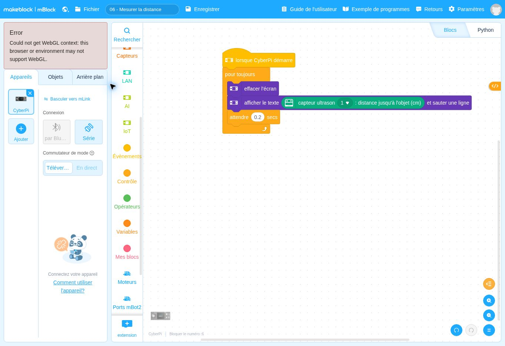

Lire une distance avant de décider
Que mesure réellement le capteur ?
Fehmi KLABI · Professeur de technologie · Formateur · Conseiller pédagogique
Ce que vous cherchez à comprendre
Avant d’utiliser un obstacle pour déclencher une action, vous devez comprendre la mesure disponible. Ce programme sépare volontairement l’observation du capteur et la commande des moteurs.
Apprentissage principal : Lire une mesure, identifier son unité et comprendre une acquisition répétée.
Prérequis et matériel : Capteur ultrason 2 connecté, identifié comme capteur 1. Une surface plane et un mètre.
Lire le comportement avant les blocs
Les lignes suivent l’ordre du programme. Une ligne en retrait appartient au choix ou à la boucle qui la précède. Cet algorithme décrit le fichier fourni ; il ne constitue pas la preuve d’un fonctionnement sur votre robot.
AU DÉMARRAGE DU PROGRAMME
RÉPÉTER SANS FIN
Effacer la console à l’écran.
Lire la distance donnée par le capteur ultrason numéro 1.
Afficher cette distance en centimètres.
Attendre 0,2 seconde.
FIN DE LA BOUCLERelier chaque groupe de blocs à l’algorithme

| Ce que vous repérez dans la capture | Ce que cela signifie |
|---|---|
| Le bloc orange « pour toujours » | Il répète l’acquisition et l’affichage. Il ne signifie pas que les moteurs tournent. |
| Le bloc vert de distance | Il fournit une valeur en cm. Le numéro 1 désigne le capteur interrogé. |
| Les blocs d’affichage et l’attente de 0,2 s | Ils renouvellent une valeur lisible environ cinq fois par seconde, hors temps d’exécution. |
Vérifier un résultat, puis l’expliquer
- Placez une boîte large face au capteur à plusieurs distances connues.
- Comparez chaque valeur affichée à la mesure au mètre.
- Changez l’orientation ou la surface de la boîte. Observez ce qui devient moins stable.
Si le résultat diffère de votre prévision
Une valeur étrange peut venir d’un obstacle mal placé, d’une surface inclinée ou d’une mesure hors portée. Vérifiez le câble et le numéro du capteur si aucune lecture cohérente n’apparaît.
Préparer une séance de technologie
Vous pouvez faire construire un protocole de mesure avant de donner un seuil d’arrêt. L’objectif est d’éviter que le capteur soit perçu comme une information toujours exacte et immédiatement utilisable.
Ce que vous pouvez fournir et laisser chercher
Donnez la structure d’affichage. Laissez choisir les distances et la façon de relever les mesures.
La trace de compréhension à demander
Un tableau distance réelle / distance affichée, accompagné d’une limite de la mesure.